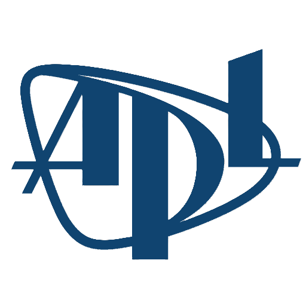

Education
2023 - 2027 (Expected)
Ph.D. in Robotics
University of Michigan, Ann Arbor, MI
2022 - 2023
M.S. in Robotics
University of Michigan, Ann Arbor, MI
Field Robotics Group · Advisor: Dr. Katherine A. Skinner
2015 - 2019
B.S in Mechanical Engineering (Minor in Computer Science)
University of Rochester, Rochester, NY
Experience
Summer 2026
Visiting Researcher
Monterey Bay Aquarium Research Institute (MBARI)
Advisor: Dr. Giancarlo Troni
Summer 2024
Visiting Researcher
University of Washington Applied Physics Lab
Advisor: Dr. Aaron Marburg · Uncertainty-aware grasp selection for underwater manipulation.
 2021 - 2022
Systems Test Engineer
iRobot
Test design and automation for mobile robot navigation in consumer environments.
Service
Reviewer
Science Robotics, RSS, ICRA, IROS, RA-L
Technical Session Chair
OCEANS 2025 (Artificial Intelligence & Machine Learning for Ocean & Great Lakes; Ocean Exploration; Sonar Imaging)
|